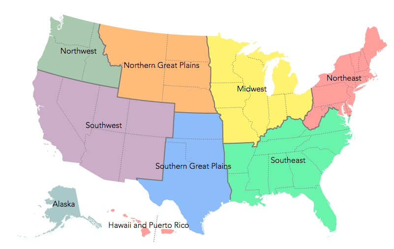

Great Gardens of the South

Butterflies Native to the Southern part of the United States include:
Hesperiidae Skippers
- Hesperiidae Skippers are found throughout the world.
- There are over 3,500 species of Hesperiidae Skippers.
- Hesperiidae Skippers tend to be small to midsize and are colored orange, white or black.
- Hesperiidae Skippers are fast and its hard to see their wings moving.
Achalarus toxeus Coyote Cloudywing
- Achalarus toxeus Coyote Cloudywings, unlike other butterflies, tend to lay single eggs.
- Travels from the United States to Central America.
Heliopyrgus domicella Erichson's White-Skipper
- Some heliopyrgus domicella Erichson's White-Skipper like to live in the desert.
- Travels from the United States all the way to Argentina.
Gorgythion begga Variegated Skipper
- Gorgythion begga Variegated Skipper are found in tropical forrests.
Butterflies in the South enjoy the following flowers/plants:
- Texas ebony (Pithecellobium flexicaule) in the pea family.
- Malva loca